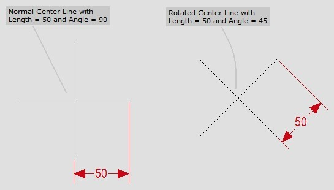
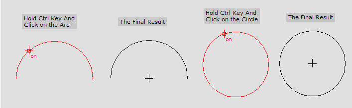
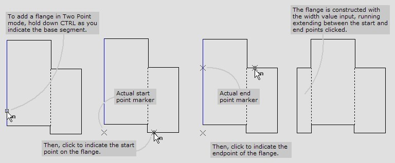
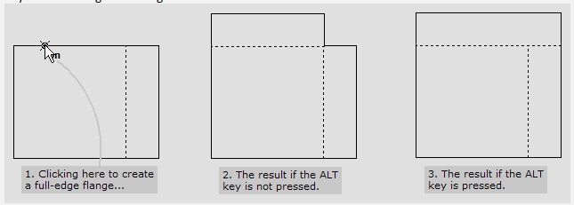
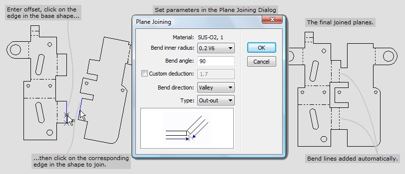
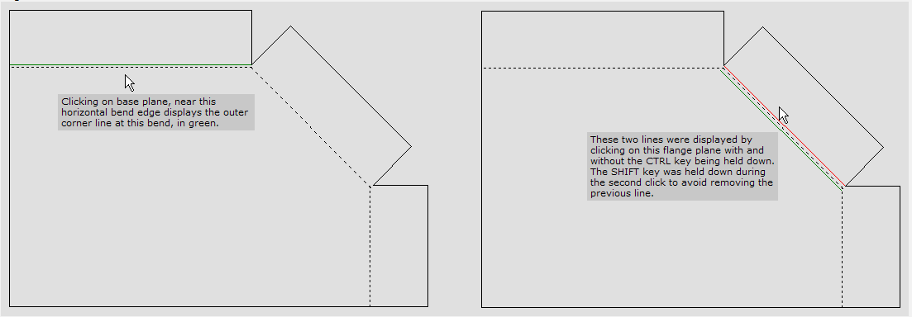

Flange design
Centre Line
Centre Line
This tool is used to create a centre line by specifying the length and angle. Enter the length and angle values in the input box and Click on the required drawing area. creates a Center Line in the shape of a Cross with each arm having the measure given as input. You can also create a Rotated Center Line by specifying the Angle value and creates the Rotated Center Line for the particular angle.

Creating Centre Line For Arc/Circle
Holding the Ctrl Button Click anywhere on the circle or the Arc. will create a Center Line for the length and angle specified.

Flange Joining
Flange Joining
The Flange Joining tool is a variant of the Plane Joining tool. When the shape to be joined is a simple rectangular flange, this tool allows it to be created and joined to the base plane in a single operation. This tool uses the length and height parameters that you supply to create a rectangular flange plane first. Then, it joins this rectangular plane to the base plane, using the Offset parameter in a similar manner to the plane joining tool.
Two point mode
This tool has a special 2-point mode that can be used to input the length and position of the flange using two mouse clicks. To invoke this mode, hold down the Ctrl key as you choose the base segment on which the flange is to be constructed. The next two mouse clicks are projected onto this base segment, and indicate the limits of the flange (thus indicating both its position and length).

Full length flanges
If you specify a length of 0 for the flange, the flange is created to extend to the full length of the edge you click on. Sometimes, the edge you are clicking on can be divided halfway through by a bend line of another flange on an adjacent edge. In this case, the flange is extended only up to the bend line, since this is the behaviour that is usually required. If you want to extend the flange all along the edge (ignoring any previous bend lines), hold down the Alt key while clicking on the edge.

Plane Joining
Plane Joining
The Plane Joining tool is used to create development drawings by composing them plane by plane. Each individual plane shape (called a flange plane) is drawn as a separate polyline, and attached to the base using this tool. When a flange is attached to a base, this tool automatically compensates by adding the bending deduction. It also adds bend line and tags it with bend information that can be edited using the Edit Bend Information tool, or exported to a BND file.
To use this tool, you need to pick the attachment segments on the base polyline and on the flange polyline. Both of these polylines must be closed polylines that are not self-intersecting. The flange polyline is rotated and moved to align up with the base polyline. When you pick a segment on the base polyline, the closest node to the point you click upon becomes the reference node for the plane joining operation. The Offset input box is used to enter the offset distance by which the flange should be displaced from this reference node. Positive or negative values can be entered in this input box to slide the flange forwards or backward along the line of attachment before it is joined. If there are inner holes in the flange plane, they are also moved into position along with the flange, as you can see in the picture below.

The Plane Joining box that comes up after picking the two segments lets you choose the bend radius from among the bend radii available in the bend database. When you type in the bend angle, computes the bend deduction and displays it. Alternately, you can check the Custom deduction checkbox, and type in a non-default value for the bend deduction. You can also choose the bend direction (this is required for the BND file), and bend type. The bend type lets know whether you have drawn the base plane and the flange plane to outer dimensions, or to inner dimensions.
Retaining the original flange plane
When you are adding a flange plane, you can hold down the Ctrl key to retain the original flange plane (along with its inner holes). In this case, makes a copy of the flange plane along with its holes and leaves the original undisturbed.
Mirroring the flange before joining
When there are symmetric flanges to be attached to two sides of a base plane, you can use this feature to avoid having to draw two similar, mirror-image flanges. You can draw one, and then attach it to the base plane (hold down Ctrl when you do this, to retain the original flange plane undisturbed). Then, attach it to the other side of the base plane, this time holding down the Alt key to mirror the flange before joining.
Missing bend deduction tables
If there is no bend deduction table for the material and thickness you are using, will prompt you to add a bend deduction, using a dialogue like the one shown below. You can type in a bend deduction value for a 90 degree bend here, (from which will compute the bend deductions for other angles) or you can choose to go to the bend deductions database, where you can specify the bend deductions in more detail.
Show Plane Edge
Show Plane Edge
When planes are joined together using the Plane Joining or Flange Joining commands, the bend centreline is created and displayed in the Bend layer. However, it is sometimes necessary to view the original outer edge of the base plane (or the flange plane). It might be also useful to view the inner edge of base plane or flange plane (the inner corner of the bend), because it might be necessary to position holes relative to these inner or outer edges.
Displaying all the inner and outer lines for all bend edges would clutter up the drawing, so this tool can be used to selectively turn on or off specified inner and outer edges. Select this mode, and click on a plane, near a bend line. This will turn on and display the outer edge of the plane you click upon, at this bend. You can hold down the Ctrl key and click to display the inner edge instead of the outer edge. Normally, displaying one edge will turn off other edges that are displayed, but you can hold down the Shift key while you click to avoid turning off previously displayed edges.
